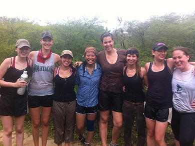

The Anthropology Department at the University of Vermont strives to be a leading undergraduate four-field anthropology program excelling in research on the diversity of humans and their cultures, providing students with a high-quality comprehensive education in anthropology grounded in the liberal arts, and addressing pressing human problems shared over time and space.
The mission of the Department of Anthropology at the University of Vermont is to produce influential research in anthropology integrated with an outstanding undergraduate liberal arts education. Drawing on the interdisciplinary four-field tradition, we emphasize strong training in contemporary anthropological theory, research methods, and ethical practices, with the goal of preparing students to think critically and act as engaged citizens for the common good. Together as students and faculty, our scholarly community mobilizes anthropological knowledge to address questions of culture and its role in a diverse and changing world.
We are especially committed to providing students with a comprehension of the variations in human populations and a sensitivity to cultural differences. In order to implement these concerns, we offer a variety of courses in all four subfields. Our advising program, including the Teacher Advisor Program (TAP) of first-year seminars, emphasizes individual attention and a mentoring relationship between faculty and students.
Over the past ten years, the department offerings have become increasingly popular with UVM students. The department has added many new faculty who are contributing new perspectives and research initiatives. All of our faculty are actively engaged in scholarship, guaranteeing that our course offerings reflect developments and trends in contemporary anthropology. As the largest undergraduate-only anthropology department in the nation, our undergraduate students are able to work closely with the faculty in developing the unique “anthropological lens” and pursuing the experiences tailored for their individual interests and aspirations.
Hands-on experience is integral to the study of anthropology. Field work, method courses, and internships are available on a course or semester basis.
We also have lab facilities where students interested in archaeology, osteology, bioarchaeology, forensic anthropology, spatial analysis, linguistic analysis, and ethnography can find training and experience, including summer field schools in archaeology.
Students may pursue their own interests by enrolling in Readings and Research in which they may work with an appropriate faculty member on their own individually-designed research. Highly motivated students may elect to do an honors thesis in which they prepare a major research project under the supervision of a faculty member.
Anthropology and UVM have roots going back to the early days of the discipline. One of the first, if not the first, undergraduate course in anthropology in the United States was taught here in 1886 by a geologist, and subsequent Dean of the College of Arts and Sciences, George Henry Perkins.
In declaring your anthropology major or minor, you are joining a rich and complex tradition of anthropological teaching and research at UVM, which goes back to the beginning of the discipline. George Henry Perkins (1844-1933), a UVM dean and professor of Natural History, presented one of the very first anthropology courses in an American university in 1886. Perkins was a natural historian, geologist, and entomologist who devoted considerable attention to archaeological research in the Champlain Valley. In the early days of the discipline of anthropology, evolutionary theories positing notions of civilization and progress were widespread, and they influenced Prof. Perkins’ approach to anthropology, which at that time existed as an arm of the natural sciences at the university. Evolutionary theories also influenced Perkins’ son, Henry F. Perkins (a UVM professor of Zoology), but in a far more problematic manner, as he directed the deplorable Vermont Eugenics Survey, in which he lobbied the state for sterilization laws of the “feebleminded” and other social “undesirables,” using now discredited notions of race. Henry, the son, never taught anthropology courses at UVM, but George, the father, did until his death in the 1930s.
Anthropology went dormant at UVM until the late-1950s, when a combined Sociology-Anthropology Department based out of Old Mill was formed, with four sociologists and two anthropologists. The evolutionary theories of Perkins’ time were long gone. In 1965, the department hired the young archaeologist Bill Haviland, a Ph.D. from University of Pennsylvania, who would spend a highly-distinguished career at UVM until his retirement in 1999. During the early-1960s, students could take a major called “Sociology-Anthropology.” Haviland convinced his colleagues to split the majors into their individual disciplines, although there continued to be a combined major too. Reflecting his comprehensive training and research interests in the discipline’s four fields, Haviland designed the new major in anthropology to be a four-field major, and courses were offered in socio-cultural, archaeological, and biological anthropologies (linguistic anthropology would not be taught until 1970).
In 1970 growing student enthusiasm for anthropology led to a separate Anthropology Department at UVM, which moved to its present location on the top floor of Williams Hall with its striking views of Lake Champlain and the Adirondacks. The department expanded rapidly and its faculty established a positive national reputation for their research and for providing a high-quality undergraduate program in four-field anthropology, a reputation it continues to enjoy today. With twelve faculty members and no graduate program, UVM Anthropology is currently one of the largest anthropology departments in the country focused solely on undergraduate education.